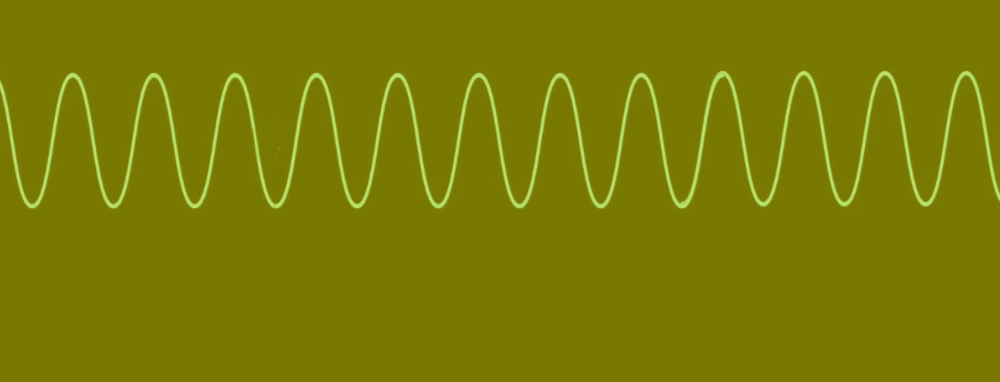
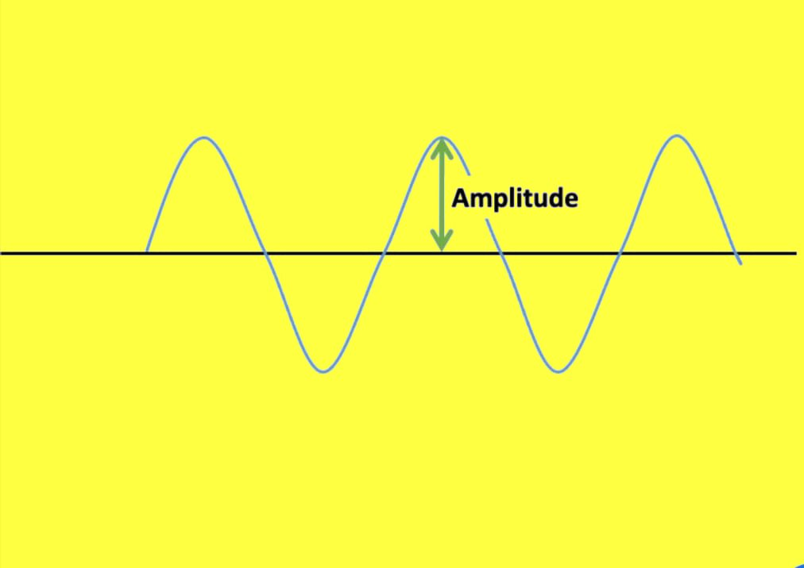
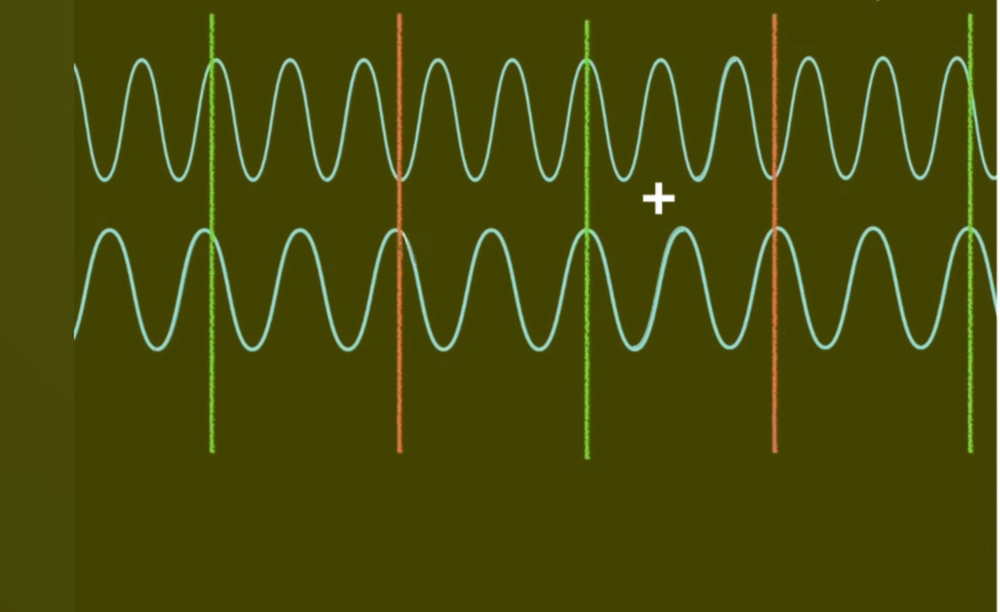

Heisenberg's Uncertainty Principle
The Core Concept
The Heisenberg Uncertainty Principle is a fundamental limit in quantum mechanics. It states that one cannot simultaneously know the exact position and momentum of a particle with perfect precision.
Δx ⋅ Δp ≥ ℏ / 2
Where:
Δx is the uncertainty in position,
Δp is the uncertainty in momentum, and
ℏ (h-bar) is the reduced Planck constant (≈ 1.054 × 10⁻³⁴ Js).
Classical vs. Quantum
In our everyday world, if we have a powerful enough camera, we can capture a ball's position and speed at once. This is just a technological limitation.
 Localization: High | Velocity: Low certainty
Localization: High | Velocity: Low certainty
 Localization: Low | Velocity: High certainty
Localization: Low | Velocity: High certainty
However, Heisenberg proved that in the quantum realm, this isn't about better cameras—it's a fundamental property of nature. This stems from Wave-Particle Duality.
Wave Nature and Momentum
From the Planck equation E = hν and De Broglie's hypothesis, we know that momentum (p) is related to wavelength (λ): p = h/λ.
An electron with a specific momentum has a perfectly defined wavelength that extends throughout the universe.


A perfect wave has undefined position (Δx = ∞)If we know the exact momentum (Δp = 0), the probability of finding the electron is the same everywhere. The uncertainty in position becomes infinite.
Localizing the Particle
To find the electron in a specific spot, we must add multiple waves of different wavelengths together (Interference).


Constructive and destructive interference creates a 'Wave Packet'By narrowing down the position (decreasing Δx), we have introduced many different wavelengths, and thus many possible values for momentum. Reducing position uncertainty automatically increases momentum uncertainty.
 A highly localized particle contains many momentum states
A highly localized particle contains many momentum states
Stabilizing the Atom
The Uncertainty Principle is what keeps atoms from collapsing. In classical physics, an electron circling a nucleus should radiate energy and spiral inward.
As an electron gets closer to the nucleus, its position becomes more certain. This causes its momentum uncertainty (and thus its kinetic energy) to skyrocket. This "quantum pressure" prevents the electron from falling into the nucleus, creating the electron clouds that make up all matter.


Beyond Measurement
A common misconception is that the principle is just about the "observer effect"—the idea that measuring something disturbs it. While measurement does disturb systems, the Uncertainty Principle is deeper: it's a fundamental trade-off in the fabric of reality itself.
- Spread vs. Precision: It's about the inherent spread of properties.
- Quantum Stability: It allows everything in the universe to exist in a stable state.